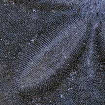
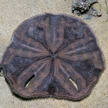
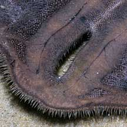
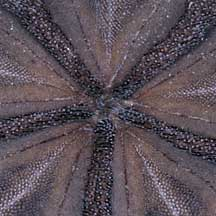
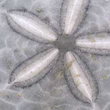
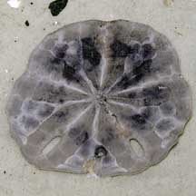
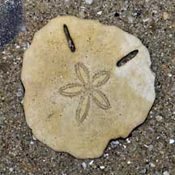

|
|
| echinoids text index | photo index |
| Phylum Echinodermata > Class Echinodea > Order Clypeasteroida |
| Keyhole
sand dollar Echinodiscus sp. Family Astriclypeidae updated Mar 2020 Where seen? This large sand dollars with slots is sometimes seen sandy areas near seagrasses on Chek Jawa and Changi. It is not found in large groups like the Cake sand dollar, usually alone. It was previously known as Echinodiscus bisperforatus. Features: Body diameter 8-10cm, somewhat polygonal, with a pair of slots perpendicular to the edge. The flower-like petalloid is obvious even in living specimens. Usually maroon-purple, sometimes yellowish brown. What is the purpose of the slots? The Keyhole sand dollar got its common name from the intriguing slot-shaped holes in the body (called lunules). Suggestions for the function of these slots range from helping the animal to burrow, right itself, find food or to prevent the waves from lifting it out of the sand. The last is the most widely accepted explanation. |
 Upperside of living sand dollar Chek Jawa, Jul 08 |
 |
 Petalloid. |
|
 Underside |
 |
 |
| Dead or alive? Sand dollars may appear dead, but they are very much alive. A living sand dollar is covered with fine spines and appears velvety. The skeleton (test) of a dead one is smooth, without any spines, and the details of skeleton can be seen more clearly. The skeleton is fragile and will shatter at the slightest pressure. |
 Upperside of test. Chek Jawa, Nov 03 |
 Upperside of test. |
 Underside of rest |
| Status and threats: The Keyhole sand dollar is listed as 'Vulnerable' in the Red List of threatened animals of Singapore. An uncommon species restricted to very few sites mainly in the Pulau Ubin-Pulau Tekong area, it is threatened by habitat loss due to coastal development. |
| Keyhole sand dollars on Singapore shores |
On wildsingapore
flickr
|
| Other sightings on Singapore shores |
 Test of dead keyhole sand dollar. Tanah Merah, Feb 09 |
Links
References
|